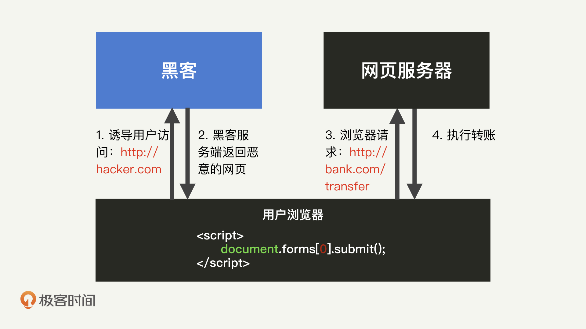
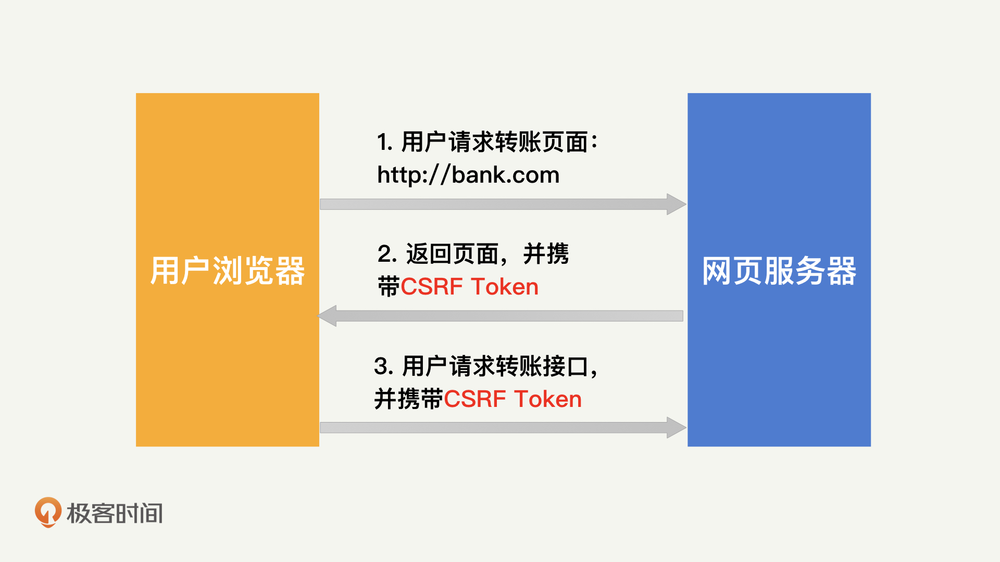
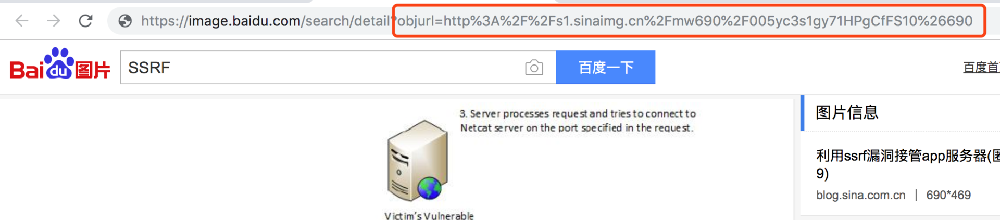
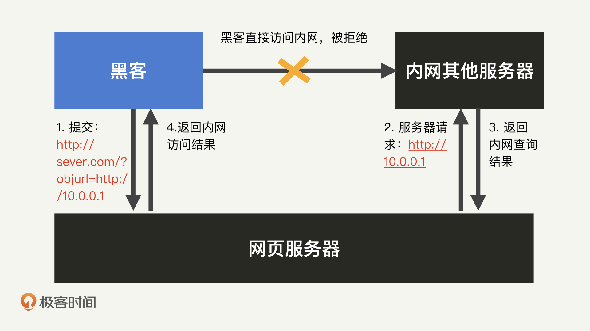
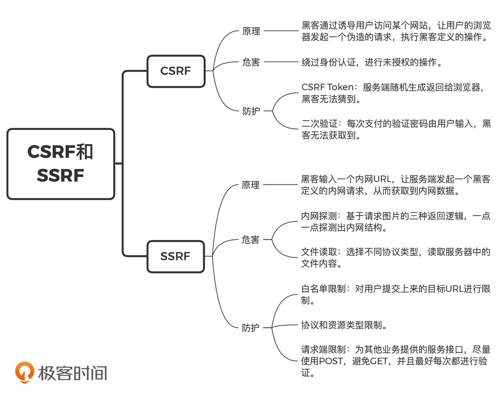

- 00 开篇词 别说你没被安全困扰过.md.html
- 01 安全的本质：数据被窃取后，你能意识到问题来源吗？.md.html
- 02 安全原则：我们应该如何上手解决安全问题？.md.html
- 03 密码学基础：如何让你的密码变得“不可见”？.md.html
- 04 身份认证：除了账号密码，我们还能怎么做身份认证？.md.html
- 05 访问控制：如何选取一个合适的数据保护方案？.md.html
- 06 XSS：当你“被发送”了一条微博时，到底发生了什么？.md.html
- 07 SQL注入：明明设置了强密码，为什么还会被别人登录？.md.html
- 08 CSRF_SSRF：为什么避免了XSS，还是“被发送”了一条微博？.md.html
- 09 反序列化漏洞：使用了编译型语言，为什么还是会被注入？.md.html
- 10 信息泄露：为什么黑客会知道你的代码逻辑？.md.html
- 11 插件漏洞：我的代码看起来很安全，为什么还会出现漏洞？.md.html
- 13 Linux系统安全：多人共用服务器，如何防止别人干“坏事”？.md.html
- 14 网络安全：和别人共用Wi-Fi时，你的信息会被窃取吗？.md.html
- 15 Docker安全：在虚拟的环境中，就不用考虑安全了吗？.md.html
- 16 数据库安全：数据库中的数据是如何被黑客拖取的？.md.html
- 17 分布式安全：上百个分布式节点，不会出现“内奸”吗？.md.html
- 18 安全标准和框架：怎样依“葫芦”画出好“瓢”？.md.html
- 19 防火墙：如何和黑客“划清界限”？.md.html
- 20 WAF：如何为漏洞百出的Web应用保驾护航？.md.html
- 21 IDS：当黑客绕过了防火墙，你该如何发现？.md.html
- 22 RASP：写规则写得烦了？尝试一下更底层的IDS.md.html
- 23 SIEM：一个人管理好几个安全工具，如何高效运营？.md.html
- 24 SDL：怎样才能写出更“安全”的代码？.md.html
- 25 业务安全体系：对比基础安全，业务安全有哪些不同？.md.html
- 26 产品安全方案：如何降低业务对黑灰产的诱惑？.md.html
- 27 风控系统：如何从海量业务数据中，挖掘黑灰产？.md.html
- 28 机器学习：如何教会机器识别黑灰产？.md.html
- 29 设备指纹：面对各种虚拟设备，如何进行对抗？.md.html
- 30 安全运营：“黑灰产”打了又来，如何正确处置？.md.html
- 加餐1 数据安全：如何防止内部员工泄露商业机密？.md.html
- 加餐2 前端安全：如何打造一个可信的前端环境？.md.html
- 加餐3 职业发展：应聘安全工程师，我需要注意什么？.md.html
- 加餐4 个人成长：学习安全，哪些资源我必须要知道？.md.html
- 加餐5 安全新技术：IoT、IPv6、区块链中的安全新问题.md.html
- 模块串讲（一）Web安全：如何评估用户数据和资产数据面临的威胁？.md.html
- 模块串讲（三）安全防御工具：如何选择和规划公司的安全防御体系？.md.html
- 模块串讲（二）Linux系统和应用安全：如何大范围提高平台安全性？.md.html
- 结束语 在与黑客的战役中，我们都是盟友！.md.html
- 捐赠
08 CSRF_SSRF：为什么避免了XSS，还是“被发送”了一条微博？
你好，我是何为舟。
前面我们讲了2种常见的Web攻击：XSS和SQL注入。它们分别篡改了原始的HTML和SQL逻辑，从而使得黑客能够执行自定义的功能。那么除了对代码逻辑进行篡改，黑客还能通过什么方式发起Web攻击呢？
我们还是先来看一个例子。在平常使用浏览器访问各种网页的时候，是否遇到过，自己的银行应用突然发起了一笔转账，又或者，你的微博突然发送了一条内容？
在我们学习XSS之后，你可能会联想到，这是银行或者微博中出现了某个XSS漏洞。但问题是，你今天并没有访问过银行或者微博的页面，所以并没有“被XSS”的机会。这时，你想到，会不会是你今天访问的其他网页里存在一些恶意的攻击，实现了你不知道的转账和发博行为呢？好了，你肯定很想知道黑客究竟是怎么做到的，那你不妨先自己思考一下，写出几个可能的答案，然后跟着我开始学习今天的内容！
CSRF攻击是如何产生的？
我们几乎每天都要用到浏览器，我们的信息也会被浏览器“保存”。那我们首先来看一下，浏览器是如何保存你的身份信息的。
当我们在访问一个Web页面的时候，并不是我们自己去获取页面信息，而是浏览器去获取了这些信息，并将它们进行了展示。这就说明，你允许浏览器代表你去和Web的服务端进行交互。为了能够准确地代表你的身份，浏览器通常会在Cookie中存储一些必要的身份信息。所以，在我们使用一个网页的时候，只需要在首次访问的时候登录就可以了。
从用户体验上来说，这当然是非常方便的。但是，黑客正是利用这一点，来编写带有恶意JavaScript脚本的网页，通过“钓鱼”的方式诱导你访问。然后，黑客会通过这些JavaScript脚本窃取你保存在网页中的身份信息，通过仿冒你，让你的浏览器发起伪造的请求，最终执行黑客定义的操作。而这一切对于你自己而言都是无感知的。这就是CSRF（Cross-Site Request Forgery，跨站请求伪造）攻击。
接下来，我们就以银行转账为例子，来详细讲解一下这个攻击过程。
当你在银行页面发起一笔转账时，这个过程其实是通过一个转账接口来完成的。这个接口的内容可能包括下面这些内容：
- 接口地址：
http://bank.com/transfer； - HTTP方法：POST；
- 接口参数：to（目标账户）、amount（金额）。
在转账之前，你肯定进行了一次登录。这样一来，这个转账接口就可以通过你之前存储在Cookie中的相关字段来完成认证了。所以，这个接口参数中不需要包含任何身份认证相关的信息。也正是因为如此，这个接口满足了CSRF攻击的基本条件：
- 使用Cookie进行认证；
- 参数中不包含任何隐私信息。
于是，黑客可以构造一个如下的空白网页。我们假设这个网页的地址为 hacker.com。
<html>
<body>
<form action="http://bank.com/transfer" method="POST">
<input type="hidden" name="to" value="hacker" />
<input type="hidden" name="amount" value="10000.00" />
</form>
<script>
document.forms[0].submit();
</script>
</body>
</html>
在HTML中，<script>标签内的JavaScript脚本会在打开网页的时候自动执行。因此，一旦用户访问了这个hacker.com的页面，它就会自动提交form表单，向http://bank.com/transfer这个接口（假设为转账接口）发起一个POST请求。
其中，to和amount这两个参数，代表着用户向黑客的账号转账10000元。只要这个用户之前登录过bank.com，并且账户余额大于10000元，那么黑客就能够成功地收到这10000元的转账了。在这个网页中，<input>的标签带有“hidden”属性，所以这整个过程对于用户来说都是不可见的。
为了方便你理解，我把这个流程，我画成了一张图，如下所示：

通过CSRF攻击，黑客能做什么？
和XSS一样，CSRF也可以仿冒用户去进行一些功能操作的请求，比如修改密码、转账等等，相当于绕过身份认证，进行未授权的操作。
值得一提的是，尽管黑客通过CSRF能进行的操作没有XSS丰富，但CSRF在传播和攻击成本上都低于XSS。这也就是说，即使你的网页中没有任何注入漏洞，但只要接口配置不当，就能够被CSRF利用。而黑客也只需要在自己的域名中，搭建一个诱导性的网页，就可以让任何访问网页的用户都遭受到CSRF攻击。而且，用户每天需要访问大量的网页，根本没有办法确认每一个网页的合法性。而从严格意义上来说，用户根本没有办法防止CSRF攻击。因此，我们只能从应用本身入手去加强防护。
如何进行CSRF防护？
那究竟该怎么进行CSRF防护呢？我们有两种方法。行业内标准的CSRF防护方法是CSRFToken。 我们先来看这个方法。
通过前面的学习，我们知道，CSRF是通过自动提交表单的形式来发起攻击的。所以，在前面转账的例子中，黑客可以通过抓包分析出http://bank.com/transfer这个接口所需要的参数，从而构造对应的form表单。因此，我们只需要在这个接口中，加入一个黑客无法猜到的参数，就可以有效防止CSRF了。这就是**CSRF Token**的工作原理。
它的工作流程，我也总结了一下，如下图所示：

因为CSRF Token是每次用户正常访问页面时，服务端随机生成返回给浏览器的。所以，每一次正常的转账接口调用，都会携带不同的CSRF Token。黑客没有办法进行提前猜测，也就没有办法构造出正确的表单了。
除了CSRF Token之外，我们也可以通过二次验证来加强防护。
回想一下，当你进行各类支付操作的时候，银行网页通常会要求你输入支付密码。你可能会觉得奇怪，明明自己已经登录了，为什么还需要输入一个独立的支付密码呢？这其实和CSRF Token的原理一样：这个独立的支付密码是需要用户输入的，只存在于用户的记忆中，因此，也是黑客无法获取到的参数。
怎么理解呢？假如说，黑客通过CSRF攻击，替你发起了一笔转账。在支付的时候，银行会发起一个全新的页面，让你验证支付密码。这个时候你发现，这个支付请求不是你本人发起的，那你肯定不会输入支付密码来完成验证。所以，在用户进行支付这样的敏感操作时，应用通常会要求用户提供一些私密的信息，就是为了对CSRF攻击进行防护。
讲到这里，你现在对CSRF的攻击和防护，应该有了一个大概的了解。简单来说，CSRF其实就是黑客利用浏览器存储用户Cookie这一特性，来模拟用户发起一次带有认证信息的请求，比如转账、修改密码等。防护CSRF的原理也很简单，在这些请求中，加入一些黑客无法得到的参数信息即可，比如CSRF Token或者独立的支付密码等。掌握了这些内容，其实CSRF的知识基本上就差不多了。
SSRF：同样的原理，发生在服务端又会发生什么？
在CSRF中，黑客通过诱导用户访问某个网站，让用户的浏览器发起一个伪造的请求。那么，如果服务端发起了这个伪造的请求，又会发生什么呢？
我们知道，服务端也有代理请求的功能：用户在浏览器中输入一个URL（比如某个图片资源），然后服务端会向这个URL发起请求，通过访问其他的服务端资源来完成正常的页面展示。
这个时候，只要黑客在输入中提交一个内网URL，就能让服务端发起一个黑客定义的内网请求，从而获取到内网数据。这就是SSRF（Server Side Request Forgery，服务端请求伪造）的原理。而服务端作为内网设备，通常具备很高的权限，所以，这个伪造的请求往往因为能绕过大部分的认证和授权机制，而产生很严重的后果。
比方说，当我们在百度中搜索图片时，会涉及图片的跨域加载保护，百度不会直接在页面中加载图片的源地址，而是将地址通过GET参数提交到百度服务器，然后百度服务器请求到对应的图片，再返回到页面展示出来。

这个过程中，百度服务器实际上会向另外一个URL地址发起请求（比如，上图中的http://s1.sinaimg.cn）。利用这个代理发起请求的功能，黑客可以通过提交一个内网的地址，实现对内网任意服务的访问。这就是SSRF攻击的实现过程，也就是我们常说的“内网穿透”。

通过SSRF攻击，黑客能做什么？
了解了SSRF攻击的过程之后，我们知道，在服务端不做任何保护措施的情况下，黑客可以利用SSRF向内网发起任意的HTTP请求。那么，这些请求会产生什么样的后果呢？我总结了一下，主要会有这样两种动作：内网探测和文件读取。
1.内网探测
我们先来看内网探测。内外网一般是隔离的。所以，黑客在外网环境中，是无法知道内网有哪些服务器，这些服务器又分别提供了哪些服务。但是，通过一个加载图片的SSRF漏洞，黑客就能够对内网进行探测。这是怎么做到的呢？别着急，我们慢慢来看。
在前面百度搜图的例子中，我们请求的地址是：https://image.baidu.com/search/detail?objurl=http://s1.sinaimg.cn/picture.jpg。因为http://s1.sinaimg.cn/picture.jpg会正常返回一个图片，所以网页会展示出来对应的图片。
我们假定这样一个服务端逻辑：在这个请求过程中，服务端会判断objurl返回数据的Content Type是否为image/jpeg。那么，可能的返回结果就有三种：
- “是”，则展示图片；
- “不是”，则返回“格式错误”；
- 无响应，则返回“找不到图片”。
基于这三种返回逻辑，黑客可以构造一个恶意的请求地址：https://image.baidu.com/search/detail?objurl=127.0.0.1:3306。如果服务器返回“格式错误”，则代表服务端本地的3306端口可用；如果返回“找不到图片”，则代表不可用。我们知道，3306是MySQL对应的端口号，因此，根据这个返回的信息，黑客就能够知道服务端本地是否开启了一个MySQL服务。接下来，黑客只需要不断重复这个过程，尝试不同的IP和端口号，就能够一点一点探测出整个内网的结构。
2.文件读取
接下来，我们说一下文件读取。服务器除了对图片的代理不做合法性判断之外，对很多其他的代理也不做判断，而是直接将代理的结果返回到前端。我们称这种情况为“有回显的SSRF”。在这种情况下，黑客不仅能够知道请求是否成功了，还能够知道具体返回的内容。这时候你肯定会好奇，黑客究竟是怎么做到呢？
在URI中，开头的http://和https://代表需要使用什么协议去进行请求。除了HTTP之外，URI还有很多种协议可以选择，比如file://就是直接读取本地的文件。通过输入file:///etc/passwd，黑客就能够通过一个请求获取到本地的passwd文件，从而知道本地有哪些用户。经过不断地尝试，黑客就能够把整个服务器中的文件内容都给拉取出来，这其中包括密钥、源码等极度敏感的信息。
我曾经就遇到过一个黑客。他通过SSRF攻击拿到了服务端的源码，然后通过对源码的分析，找到了一个SQL注入的漏洞，再利用SSRF发起对内网的SQL注入攻击，从而拿到了内网的命令执行权限。
如何进行SSRF防护？
因为SSRF漏洞起源于业务的正常功能需求（比如百度图片的图片请求等等）。因此，我们很难真正消除它。尽管如此，我还是会为你介绍几种常见的防护手段，来尽可能地提高应用的安全性。这些常见的手段主要包括：白名单限制、协议限制和请求端限制。接下来，我们一一来看。
白名单的限制永远是最简单、最高效的防护措施。 SSRF中的白名单，就是对用户提交上来的目标URL进行限制。比如，只允许是同一个域名下的URL。你可以理解为，让百度图片的代理服务只允许代理baidu.com的URL。但是，很多时候，因为业务功能的设计，白名单的限制并不可行。比如，上述百度图片的例子，这个功能的设计思路就是，baidu.com这个域名下能够请求各类域名下的图片资源（比如上述例子中的sinaimg.cn）。
在这种时候，我们可以对协议和资源类型等进行限制。比如：对于使用协议，我们只允许HTTP或者HTTPS协议；对于返回的内容，我们只允许图片格式的内容。通过这些限制，虽然不能完全阻止黑客发起SSRF攻击，但也大大降低了黑客能够造成的危害。
除此之外，因为SSRF最终的结果，是接受代理请求的服务端发生数据泄露。所以，SSRF防护不仅仅涉及接收URL的服务端检测，也需要接受代理请求的服务端进行配合。在这种情况下，我们就需要用到请求端限制，它的防护措施主要包括两个方面。
第一，为其他业务提供的服务接口尽量使用POST，避免GET的使用。因为，在SSRF中（以及大部分的Web攻击中），发起一个POST请求的难度是远远大于GET请求的。因为默认的请求方式是GET，而发起POST请求，需要在发起HTTP请求的时候进行配置。很多安全漏洞中不包含能够配置协议的地方。在上述百度图片的例子中，黑客显然就只能发起GET请求。如果某个敏感服务是POST的，黑客就无法请求到相关资源了。
第二，为其他业务提供的服务接口，最好每次都进行验证。通过SSRF，黑客只能发起请求，并不能获取到服务端存储的验证信息（如认证的key和secret等）。因此，只要接受代理请求的端对每次请求都进行完整的验证，黑客无法成功通过验证，也就无法完成请求了。
总结
好了，今天的内容差不多了，让我们来回顾一下，你要掌握的重点内容。
今天我们介绍了CSRF和SSRF这两种攻击方式。其中，CSRF是黑客控制用户的浏览器发起伪造的请求，SSRF则是黑客控制服务端发起伪造的请求。通过伪造的请求，黑客可以伪造用户或者服务器的身份，越权获取数据或者发起请求。应用中的请求接口越敏感，黑客能够造成的伤害就越大。
除此之外，CSRF和SSRF产生于正常的业务功能逻辑中，因此，我们没有办法从根本上阻止黑客发起伪造的请求。但是，你可以通过加强接口的安全验证，来避免伪造请求造成影响。在CSRF中，我们可以通过CSRF Token或者二次验证等操作来加强防护。这样，黑客无法获取到隐私信息，也就无法发起连续的请求了。在SSRF中，我们则需要限制可请求的域名，来限制黑客能够访问到的资源。另外，目标服务端，也需要加强接口的验证，来避免伪造请求成功通过授权。
今天的内容比较多，为了方便你记忆，我总结了一个知识脑图，你可以通过它来对今天的重点内容进行复习巩固。

思考题
接下来，让我们来看一道思考题。
通过今天的讲解，你可以回忆一下，你的企业是否遇到过CSRF/SSRF攻击呢？如果遇到过，当时是如何处理的呢？如果没有遇到过，那你负责的Web或者应用中，是否实现了CSRF/SSRF的保护逻辑呢？具体又是怎么实现的呢？
欢迎留言和我分享你的思考和疑惑，也欢迎你把文章分享给你的朋友。我们下一讲再见！
© 2019 - 2023 Liangliang Lee. Powered by gin and hexo-theme-book.